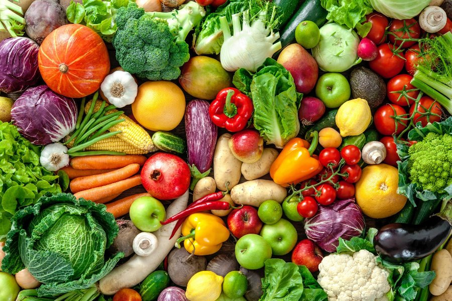
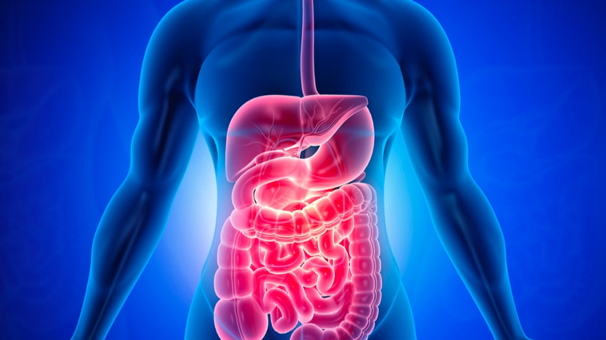
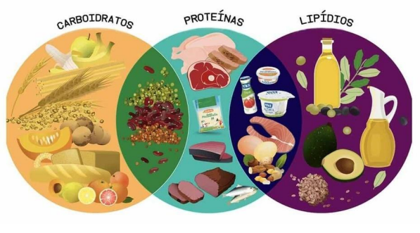
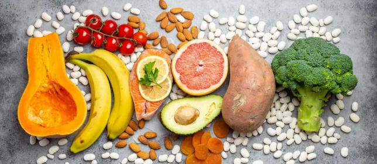
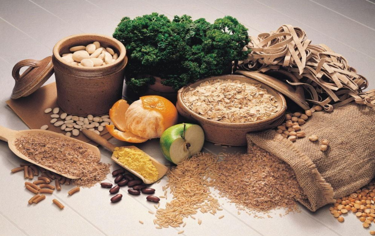

Alimentação e suas importâncias para a terceira idade
(Pedro Felipe - Henrique Biasoli - Rafael dos Santos)
Uma alimentação saudável, diferentemente do que muitos pensam, não é uma alimentação cheia de restrições ou sem sabor. Uma alimentação saudável é aquela que garante, principalmente, que seu organismo esteja recebendo todos os nutrientes de que ele precisa. Para ser uma alimentação realmente saudável, é preciso pensar em variedade, equilíbrio, quantidade e na segurança dos alimentos que estão sendo ingeridos. Entre os principais problemas de saúde relacionados com uma má alimentação estão a obesidade, o diabetes, hipertensão e até mesmo alguns tipos de cânceres. Não podemos nos esquecer ainda que uma alimentação deficiente é causa de desnutrição. Todos esses problemas são graves e podem levar um indivíduo à morte, portanto, uma alimentação saudável é sinônimo de saúde.
Qual a melhor maneira para obter uma vida saudável por um idoso?
Para chegar até a média de 76,8 anos ou ultrapassá-la com saúde e disposição, a receita é conhecida por praticar atividade física, manter uma alimentação saudável e fazer acompanhamento médico periódico. Nessa fase da vida, cuidar da alimentação é mais do que simplesmente controlar os excessos de açúcar e gordura, já que algumas pessoas podem apresentar dificuldades na mastigação e problemas digestivos. Apesar de eventuais restrições e adaptações, comer com prazer é parte fundamental da qualidade de vida em qualquer idade. Para saber como oferecer uma alimentação rica em sabor e nutrientes para os idosos, confira nossas dicas.
Nutrientes essenciais: o que não pode faltar no prato?
O termo digestão e seus tipos
Digestão é a quebra de grandes moléculas de alimentos insolúveis em pequenas moléculas de alimentos solúveis em água para que possam ser absorvidas no plasma sanguíneo aquoso. Em certos organismos, essas substâncias menores são absorvidas através do intestino delgado para a corrente sanguínea. A digestão é uma forma de catabolismo que muitas vezes é dividida em dois processos com base em como os alimentos são decompostos: digestão mecânica e química. O termo digestão mecânica refere-se à quebra física de grandes pedaços de comida em pedaços menores que podem ser acessados posteriormente por enzimas digestivas. A digestão mecânica ocorre na boca através da mastigação e no intestino delgado através de contrações de segmentação. Na digestão química, as enzimas decompõem os alimentos em pequenas moléculas que o corpo pode usar. Dentre as quais apresentam, o ser humano realiza a Digestão Extracelular. Ao qual é aquela em que o processo de digestão ocorre totalmente no sistema digestório do animal. Nós, seres humanos, possuímos esse tipo de digestão. Órgãos como, por exemplo, estômago, fígado e intestino atuam nesse processo. Podemos citar como exemplos, de seres que possuem esse tipo de digestão, as espécies animais que fazem parte dos mamíferos, répteis, aves, peixes e anfíbios. Animais invertebrados, como a minhoca, também realizam o processo digestório de forma extracelular.
Alimentação na fase adulta
(Maria Clara Diório - Mileny Sabrina - Renan Cordeiro - Thiago Bittencourt)
A alimentação é um dos pilares fundamentais para a manutenção da saúde e qualidade de vida de qualquer indivíduo, especialmente na fase adulta. Uma alimentação equilibrada e adequada às necessidades de cada pessoa é fundamental para prevenir diversas doenças crônicas, como diabetes, obesidade, hipertensão, doenças cardiovasculares, entre outras. Neste artigo, abordaremos os tópicos mais importantes relacionados à alimentação na fase adulta.
Macronutrientes
Os macronutrientes são os nutrientes que devem ser consumidos em maior quantidade na alimentação, são eles: carboidratos, proteínas e gorduras. É importante manter um equilíbrio entre esses nutrientes, uma dieta com excesso de um deles pode levar a problemas de saúde. Os carboidratos devem corresponder a 45-65% do valor energético total da dieta, as proteínas a 10-35% e as gorduras a 20- 35%. O consumo adequado de proteínas é fundamental para a manutenção da massa muscular e para a recuperação de lesões, enquanto os carboidratos fornecem energia para o corpo e as gorduras são importantes para a absorção de vitaminas e para a manutenção das células.
Micronutrientes
Os micronutrientes são os nutrientes que devem ser consumidos em menor quantidade na alimentação, são eles: vitaminas e minerais. Esses nutrientes são essenciais para o bom funcionamento do organismo, ajudando na manutenção da saúde óssea, da visão, da imunidade, da pele, entre outras funções. É importante consumir uma variedade de alimentos para garantir a ingestão adequada de todos os micronutrientes. Alguns exemplos de alimentos ricos em vitaminas e minerais são frutas, legumes, verduras, cereais integrais, leite e derivados.
Hidratação
A hidratação é fundamental para a manutenção da saúde e deve ser uma preocupação constante na alimentação adulta. O consumo adequado de água varia de acordo com cada indivíduo, mas em média, é recomendado consumir pelo menos 2 litros de água por dia. Além da água, outras bebidas como sucos naturais, chás e água de coco também podem contribuir para a hidratação do corpo.
Fibra alimentar
As fibras alimentares são importantes para o funcionamento adequado do sistema digestivo, além de ajudar a prevenir doenças como diabetes, obesidade e doenças cardiovasculares. As fibras são encontradas em alimentos como frutas, verduras, legumes, cereais integrais e sementes. É recomendado consumir pelo menos 25 gramas de fibras por dia para adultos.
Alimentação saudável
Uma alimentação saudável deve ser equilibrada e variada, contendo uma variedade de alimentos de todos os grupos alimentares. É importante evitar o consumo excessivo de alimentos processados, ricos em açúcares, gordura trans e sódio, que podem levar a problemas de saúde a longo prazo. É fundamental também manter uma alimentação regular e fracionada ao longo do dia, fazendo de 3 a 6 refeições diárias para evitar picos de glicemia e manter o metabolismo ativo.
Necessidades individuais
Cada pessoa tem necessidades nutricionais individuais que podem variar de acordo com o sexo, idade, nível de atividade física e condições de saúde. É importante procurar um profissional de nutrição para avaliar as necessidades individuais e elaborar um plano alimentar adequado. Além disso, é importante estar atento a sinais do corpo, como fome, sede e cansaço, e ajustar a alimentação de acordo com esses sinais.
Alimentação e estilo de vida
A alimentação está diretamente relacionada ao estilo de vida de cada pessoa. É importante levar em consideração fatores como horários de trabalho, rotina de exercícios físicos, hábitos alimentares, entre outros, para criar um plano alimentar adequado e sustentável. Além disso, é importante estar atento a possíveis condições de saúde, como intolerâncias alimentares e alergias, para ajustar a alimentação de acordo com essas condições.
Conclusão
A busca por uma alimentação saudável e equilibrada deve ser constante para manter a saúde e prevenir doenças. A alimentação na fase adulta é fundamental para a manutenção da saúde e qualidade de vida. É importante manter um equilíbrio entre macronutrientes e micronutrientes, além de garantir a hidratação adequada e o consumo de fibras alimentares. Uma alimentação saudável deve ser equilibrada, variada e adequada às necessidades individuais de cada pessoa. Além disso, é fundamental levar em consideração o estilo de vida e possíveis condições de saúde na elaboração do plano alimentar.
Alimentação saudável na infância
(Isabele Pires - Marina Ribeiro - Kethlin Aparecida - Stella Alves - Alícia Nagata - Gabriela
Dellaqua - Matheus Gabriel
Amanda Venâncio - Ana Clara da Silveira - Isabela de Fátima - Luísa Moreira - Laysla de Lima
-
Maria Eduarda Giovanelli - Lívia de Oliveira)
A alimentação saudável para crianças é um tema de grande importância na atualidade, pois uma
nutrição adequada desde a infância é fundamental para o desenvolvimento físico, cognitivo e
emocional dos pequenos.
A dieta balanceada e variada fornece os nutrientes necessários para o crescimento e
manutenção
do sistema imunológico, fortalece o sistema imunológico, previne doenças e ajuda a formar
hábitos alimentares saudáveis que serão levados para toda a vida.
Um pratinho colorido
e
nutritivo é de extrema importância ser inserido desde a infância, pois além de trazer
benefícios
é extremamente gratificante ver seu filho se alimentando bem. Ter acesso a uma boa
alimentação
nos primeiros anos de vida é fundamental para que a criança se torne um adulto saudável, e
ao
longo do artigo aprofundaremos mais sobre esse assunto.
A importância de uma boa alimentação na infância
A introdução alimentar é um momento crucial na vida de um bebê, pois é nessa fase que ele
começa a
receber alimentos complementares além do leite materno ou fórmula infantil. Uma introdução
alimentar
bem-feita é essencial para garantir que o bebê receba os nutrientes necessários para o seu
crescimento e desenvolvimento de forma saudável.
Os primeiros 1000 dias de vida são considerados um período crítico para a nutrição do bebê,
pois é
nessa fase que ocorrem importantes mudanças no organismo e no desenvolvimento cerebral.
Portanto, a
introdução de alimentos sólidos deve ser intuitiva e iniciada no momento certo, levando em
consideração a maturidade gastrointestinal do bebê.
Logo na infância, a alimentação auxilia no crescimento, previne que problemas de saúde como
anemia, obesidade e cárie, possam aparecer e evita que haja falta de nutrientes, vitaminas e
minerais.
Os alimentos que devem ser atribuídos as crianças são aqueles in natura, como frutas,
verduras, legumes e sementes, mas assim como as comidas “não saudáveis”, todos devem ser
consumidos de forma adequada.
Os baixinhos precisam de muita energia para brincar, estudar, realizar atividades físicas,
como já sabemos, mas é importante ressaltar que o hábito de se ter uma rotina saudável deve
partir do exemplo dos pais, os incentivando.
Dicas para ajudar na construção de hábitos saudáveis
Biotecnologia na alimentação infantil
A biotecnologia produz vários alimentos do dia a dia, sendo capaz de produzir substâncias como vitaminas e alimentos mais saudáveis que são cruciais para o desenvolvimento infantil. Com sua capacidade de introduzir melhores alimentos ao mercado com um preço acessível ajuda a ser muito mais fácil desses alimentos chegarem as crianças. A biotecnologia, hoje, é capaz de criar alimentos ainda mais nutritivos e saudáveis, não basta criar alimentos altamente nutritivos: é importante que eles estejam acessíveis a todas as famílias, só assim podemos garantir a saúde das crianças.
Conclusão
Em conclusão, uma alimentação saudável para crianças e bebês é fundamental para promover um crescimento e desenvolvimento adequado, prevenir doenças e garantir um estilo de vida saudável. A introdução gradual de alimentos sólidos deve ser feita de forma cuidadosa, sempre respeitando as necessidades individuais da criança e evitando alimentos processados e industrializados. É importante que os pais e cuidadores mantenham uma variedade de alimentos nutritivos e incentivem hábitos alimentares saudáveis desde cedo, criando um ambiente alimentar positivo e sustentável para a criança. Além disso, é fundamental que as crianças recebam acompanhamento médico e nutricional regular para garantir que suas necessidades nutricionais sejam atendidas de forma adequada e segura.
Alimentação de animais
(Camily Ferreira - Lívia Montovani -
Leonardo Dalla
- Mariana Campos - Rafaela Lima)
Alimentação em geral
A alimentação é essencial para a saúde e bem-estar dos pets, assim como para os seres humanos. No entanto, é importante entender que diferentes animais têm diferentes tipos de digestão, o que significa que sua dieta também deve ser diferente. Neste texto, vamos discutir a importância da alimentação saudável para pets, o que é uma dieta saudável para diferentes animais de estimação e se há uma opção de alimentação natural para os mesmos. Vamos abordar as necessidades alimentares de cachorros, gatos e peixes, com dicas de como proporcionar uma dieta adequada para cada um deles. Afinal, assim como a alimentação é importante para nossa saúde, ela é essencial para garantir a saúde e longevidade dos nossos queridos pets.
Digestão
Existem diferentes tipos de digestão animal, que variam de acordo com a espécie e a dieta do animal. Em geral, podemos classificar a digestão em dois tipos principais: a digestão simples e a digestão complexa.
Alimentação saudável para animais
Uma alimentação saudável para animais depende das necessidades nutricionais de cada espécie e da fase da vida em que se encontra. É importante oferecer uma dieta balanceada, que forneça as quantidades adequadas de proteínas, carboidratos, gorduras, vitaminas e minerais. Em geral, uma alimentação natural para animais é aquela que se assemelha à dieta que o animal consumiria na natureza. Por exemplo, os cães são animais carnívoros e sua alimentação natural seria composta principalmente de carne. Já os gatos são carnívoros estritos, ou seja, dependem exclusivamente de alimentos de origem animal para obter os nutrientes necessários. No entanto, é importante lembrar que, mesmo para animais que consomem alimentos industrializados, existem opções de rações de qualidade que oferecem uma alimentação completa e balanceada.
Alimentação dos Gatos
A alimentação dos gatos é, fundamentalmente, a ração seca e a úmida de acordo com a fase de idade que
ele se encontra. Lembre-se, a ração é uma excelente fonte de proteína e isso é muito importante para
o desenvolvimento deles.
Ao contrário das pessoas e dos cães, a proteína é a fonte principal de energia na dieta dos gatos.
No entanto, isso não significa que os gatos não possam comer cereais, vegetais e frutas.
Os gatos podem comer todos estes alimentos. Alguns são simplesmente mais fáceis para digerir do que
outros.
Há um conjunto de alimentos que pode dar ao seu gato. Dê-lhe apenas como um mimo. Alguns alimentos
que os gatos podem comer incluem:
Alimentação para Pássaros
A base da alimentação de pássaros,são rações extrusadas e alimentos naturais. Existe uma grande importância em introduzir esses tipos de alimento nas aves a partir do momento em que eles completam 2/3 meses de vida,que é a fase de transição alimentar da papinha para alimentos sólidos. Muitas pessoas acham que as sementes devem ser a base da alimentação das aves,mas muito pelo contrário,além delas serem ricas em gordura,elas não possuem os nutrientes suficientes que uma ave precisa,mas podem ser dadas para os pássaros de 2 a 3 vezes por semana como um "agrado" pois eles amam esse tipo de alimento. A alimentação natural é um detalhe muito importante,mas precisa de uma grande atenção com alimentos que esses animais podem ou não comer,entre alimentos liberados estão: brócolis, cenoura, abobrinha ,banana ,melancia... E entre alimentos proibidos estão: abacate ,abacaxi ,pão ,bolacha ,alface....
Em resumo, a alimentação saudável é fundamental para garantir a saúde e bem-estar dos pets. É importante entender que diferentes animais têm diferentes tipos de digestão, e que uma dieta adequada é essencial para atender às suas necessidades nutricionais. Embora existam opções de alimentação natural para pets, é importante lembrar que cada animal tem necessidades individuais e que a consulta a um veterinário é fundamental para garantir uma dieta saudável.
Alimentação de Cachorros
Assim como os humanos, os cachorros também precisam de uma alimentação adequada e equilibrada para manter uma boa saúde e bem-estar. A dieta dos cachorros deve ser composta por alimentos que atendam às suas necessidades nutricionais, sendo que cada cachorro pode ter necessidades específicas dependendo de sua idade, tamanho e condições de saúde. Em geral, a dieta dos cachorros deve ser baseada em proteínas de qualidade, que são essenciais para o desenvolvimento e manutenção dos músculos, além de carboidratos e gorduras saudáveis para fornecer energia. É importante escolher alimentos de qualidade e evitar alimentos processados ou com muitos aditivos químicos. Os cachorros também precisam de vitaminas e minerais, que podem ser encontrados em frutas, legumes e verduras. Alguns exemplos de alimentos que podem ser oferecidos aos cachorros incluem frango, carne vermelha, peixe, ovos, arroz integral, batata-doce, abóbora, cenoura, brócolis, maçãs e bananas. No entanto, é importante ressaltar que cada cachorro é único e pode ter necessidades alimentares diferentes. Por isso, é recomendado consultar um veterinário para avaliar a dieta mais adequada para o seu cachorro, levando em consideração sua idade, peso, condição de saúde e outras características individuais. Além disso, é importante ter cuidado com a quantidade de alimentos oferecidos ao cachorro, evitando o excesso que pode levar a problemas de saúde como obesidade. É recomendado oferecer as refeições em horários regulares e controlar a quantidade de petiscos e guloseimas oferecidos ao cachorro. Em resumo, a dieta dos cachorros deve ser baseada em alimentos de qualidade, oferecidos em quantidades adequadas para atender às suas necessidades nutricionais individuais. Consultar um veterinário para obter orientação sobre a dieta do seu cachorro é fundamental para garantir sua saúde e bem-estar.